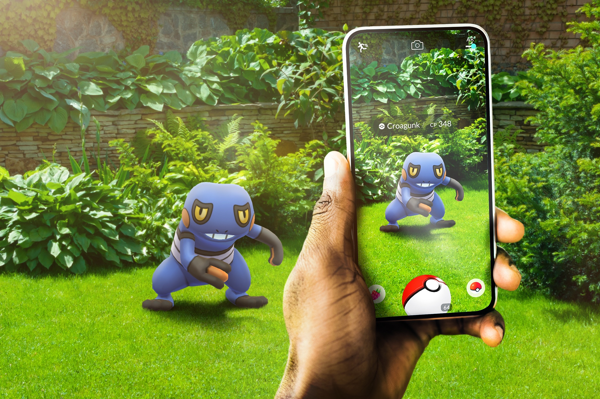

2013-2017: La explosión de los dispositivos móviles y las aplicaciones
Entre 2013 y 2017, la industria de los dispositivos móviles experimentó un crecimiento exponencial. La introducción de nuevos dispositivos como el Apple Watch, junto con el auge de las aplicaciones móviles, transformó la manera en que las personas interactúan con la tecnología. La realidad aumentada, popularizada por juegos como Pokémon Go, abrió nuevas posibilidades para la interacción entre el mundo físico y digital.


- Dispositivos como el Apple Watch y Fitbit popularizaron el seguimiento de la salud y la actividad física.
- Pokémon Go demostró el potencial de la realidad aumentada para el entretenimiento y otras aplicaciones.
- Las tiendas de aplicaciones se convirtieron en ecosistemas prósperos, ofreciendo millones de aplicaciones para satisfacer diversas necesidades.
- G, R. Á. (2015, 21 febrero). Un crecimiento imparable de smartphones en México reporta 52.6 millones de dispositivos en 2014. Xataka México. Referencia
- Sanchis, A. (2022, 6 mayo). Cómo ha evolucionado el mercado de los móviles en los últimos 30 años, en un gráfico en movimiento. Xataka. Referencia